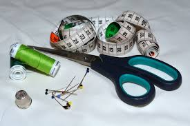
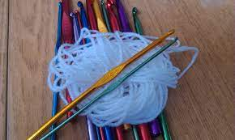
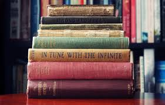
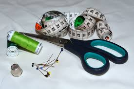
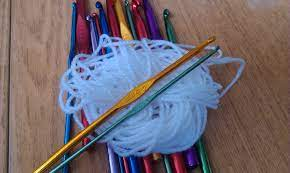
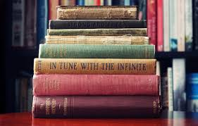

Harrastukseni
Minua kiinnostaa kaikki käsillä tekeminen, ompelen, virkkaan askartelen. Myös lukeminen on minulle lähes elinehto.
  Olen myös ollut töissä eri ompelimoissa, lastenvaatteista moottorikelkkahaalareita valmistavaan yritykseen.
Minua kiinnostaa kaikki käsillä tekeminen, ompelen, virkkaan askartelen. Myös lukeminen on minulle lähes elinehto.
  Olen myös ollut töissä eri ompelimoissa, lastenvaatteista moottorikelkkahaalareita valmistavaan yritykseen.